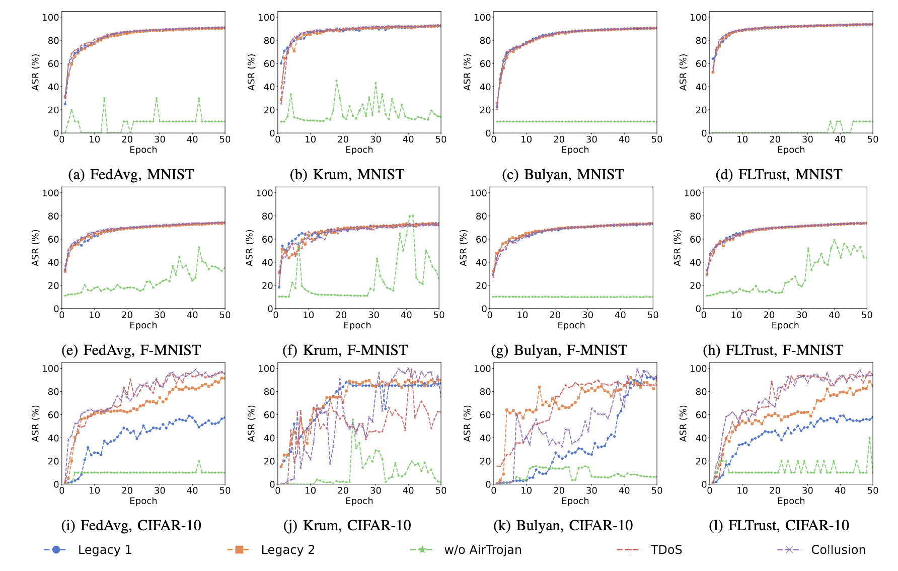

Federated Learning (FL) is a widely adopted distributed machine learning technique where clients collaboratively train a model without sharing their data. A critical component of FL is client selection, which involves choosing the necessary number of clients for each training round. Current client selection algorithms for wireless FL rely on the conditions of wireless channels but do not account for vulnerabilities from attacks on these channels, such as channel state information (CSI) forgery attacks. In this paper, we introduce AirTrojan, a novel attack vector that targets client selection in FL. Our key insight is that since the channel state can be manipulated by attackers, an attacker can adjust their probability of being chosen as a participant. AirTrojan enhances the feasibility of adversarial attacks on FL, which usually assume that malicious clients are always selected as participants. We demonstrate the effectiveness of AirTrojan by showing how it can disrupt client selection and facilitate model poisoning attacks on FL. Our work highlights that it is urgent to add security components to client selection processes in wireless FL.
This Figure shows ASRs of stealthy model poisoning (StealthyMP) on three datasets when four aggregations were deployed as the defense. Due to space limit, we cannot include results from all 7 aggregation methods. The main conclusions are consistent from those from untargeted MPAs. Particularly, when client selection was assumed to be perfect for MPA attackers, i.e., an attacker was guaranteed to participate every traing round of FL, StealthyMP achieved the highest ASRs. However, the situation changed significantly when assuming that PS deployed client selection such as the CSI-based method (see Algorithm~\ref{alg:user-selection-scq}), which holds more often in practice. Specifically, client selection at PS can effectively affect (decrease) the probability of the MPA attacker(s) being selected thus significantly reduce ASR of StealthyMP. The results from Fig.~\ref{fig:backdoor1} suggest that StealthyMP achieved only low ASRs (lower than 10\%) and thus became almost ineffective under w/o AirTrojan setting. Finally, when combined with the proposed AirTrojan attacks, StealthyMP was able to achieve similar attack performance as under Legacy 1 and Legacy 2, i.e., the ideal assumption that an MPA attacker was guaranteed to be selected for model training. In conclusion, client selection is critical for StealthyMP while AirTrojan can escalate StealthyMP by attacking client selection at PS.

Impacts of AirTrojan on StealthyMP.
@INPROCEEDINGS{10735606,
author={Lyu, Xingyu and Li, Shixiong and Wang, Ning and Li, Tao and Chen, Danjue and Chen, Yimin},
booktitle={2024 IEEE Conference on Communications and Network Security (CNS)},
title={Adversarial Attacks on Federated Learning Revisited: a Client-Selection Perspective},
year={2024},
doi={10.1109/CNS62487.2024.10735606}}